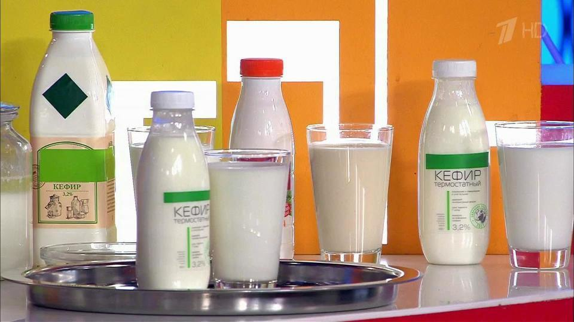

Кефир – один из основных продуктов питания детской кухни, он очень полезен и для взрослого человека, его употребление можно смело рекомендовать вам для постоянного, то есть ежедневного лечебного или профилактического средства.
Ни один врач не выписывал рецепт на употребление кефира. Наверное потому, что это – дело не столько медицины, сколько здравого смысла каждого человека, а здравый смысл подсказывает, что пить кефир надо всем. Но исключения есть, к сожалению, у любых правил.
Вот и в данном случае приходится предупредить, что употребление кефира не показано при желудочных заболеваниях с повышенной кислотностью. Также надо учитывать и то, что кефир обладает послабляющим действием, поэтому пить его людям, кишечник которых склонен к явлениям, противоположным запорам, можно в лишь в небольших количествах.
Да, кефир полезен, и очень, да, он способствует предупреждению и лечению самых разнообразных и тяжелых расстройств здоровья, да, он помогает похудеть до мировых стандартов, чем и пользуются супермодели, не слезающие с диеты, в которой йогурты и кефиры занимают чуть ли не первое место.
А вы загляните в модные журналы, так, ради интереса. Там вы увидите, к чему приводит употребление кисломолочных продуктов. Картина вызывает удивление и стремление подражать знаменитым миллионерам и миллионершам, принесшим свои богатсва в жертву здоровью и физическому совершенству. И все-таки пить кефир надо с умом, чтобы не было вреда.
Понимаете ли, кефир относится к кисломолочным продуктам, а те, в свою очередь, к молочным. Как известно, все молокосодержащие продукты обладают общеуспокаивающим действием на человека, снимают напряжение и расслабляют, релаксируют, как нервную, так и мышечную систему. Поэтому нечего удивляться, если вы получите неудовлетворительную оценку на экзамене, непосредственно перед ним выпив кефира или молока.
Ведь вы из состояния собранного и сосредоточенного перейдете в некую кефирную нирвану, позволяющую воспринимать все с великой доброжелательностью, но лишь до появления первых неприятностей, то есть, в данном случае, до получения «двойки». В конце концов, тут не важно, студент вы или просто собрались сходить к зубному врачу, важно, в какой психофизической форме вы находитесь в момент стресса.
Гораздо предпочтительнее в момент, предшествующий какому-либо испытанию, подзарядить себя, выпив стакан фруктового сока. Что же касается кефира, то в подобных ситуациях он – плохой стимулятор.
Тот же, кто решит для себя перейти исключительно на кефирую пищу, исходя из фактора полезности, то вскоре обретет ее только на уровне желудочно-кишечного тракта, который будет действовать с бешеной скоростью. Ну, вот, пожалуй, и все предупреждения, которые надо было сделать.
Конечно же, нам совсем не хочется вызвать ваше недоумение или даже недовольство тем, что начиная разговор о пользе кефира для здоровья, мы даем ему критические характеристики. Мы за кефир, а наши предупреждения относятся лишь к нормам его потребления и некоторым ограничениям, с этим связанным.
Кефир – дитя науки. Он является продуктом, возникающим вследствие химических реакций, происходящих в результате специальной закваски, рецепт которой относительно нов. Еще несколько столетий назад о нем и слыхом не слыхивали и вполне без него обходились. Но новое время приносит не только иные нравы, но и изобретает свои продукты. Есть для этого серьезные причины.
Так называемый технический прогресс, который совсем недавно вызывал в обществе лишь чувство гордости за себя, радуя людей все более оригинальными достижениями, в последнее время получает и другие оценки. Дело в том, что научные открытия, осуществляемые с целью якобы осчастливить человечество (такое иногда действительно происходит), нередко являются лишь следствием неизбежного процесса познания мира, сопутствующего людям на протяжении всего периода цивилизации и даже доисторического времени.
Многие открытия, которые в теории могли бы принести реальную пользу, в итоге оборачиваются нам во вред. Применение атомной энергии в военых целях и употребление консервантов в пищевой промышленности – конкретные примеры тому. При таком положении вещей, когда человек вынужден искать защиты от своих собственных изобретений, поиск чего-то спасительного и действительно безвредного становится все более актуальным.
Многие дети, едва появившись на свет, становятся жертвами различных инфекций и нуждаются в лечении, вместо того чтобы спокойно сосать молоко матери. Да и само материнское молоко не всегда полезно младенцам, поскольку его полезные свойства резко понижаются из-за питания некачественными продуктами искусственного производства.
Это происходит в течение многих лет, предшествующих материнству, а не только в период беременности, когда приходится лишь пожинать плоды неправильного питания; для многих оно постоянное явление, а для большинства же городских жителей – просто неизбежное. Вот тут-то и появляется кефир, продукт, способный регулировать микрофлору нашего кишечника, по своему составу к ней очень близкий и помогающий при многих болезнях, возникающих как у детей, так и у взрослых.
При многочисленных заболеваниях кишечника кефир является одним из основных компонентов лечебной диеты: он очень легко усваивается: если выпитое нами молоко в течение часа переваривается лишь на 30 %, то кефир за то же время – на 90 %. Благодаря этому качеству кефир вообще улучшает процессы пищеварения, способствует скорейшему усвоению и других продуктов.
Кроме того, кефир обладает и антимикробным действием, что чрезвычайно важно при желудочных растройствах инфекционного или какого-либо иного характера. Тут есть одна особенность: кефир – продукт довольно кислый, и мы уже упоминали, что его употребление не рекомендовано в случае кишечных заболеваний, связанных с повышенной кислотностью. Если же она меньше нормы, как это бывает, например, при хронических гастритах с пониженной кислотностью, то кефир становится необходимым, чуть ли не самым важным компонентом диеты.
Кефир показан при многих заболеваниях, свойственных разным возрастам: и при детском дисбактериозе и рахите, при анемии, воспалении легких, при аллергии на пищевые продукты, встречающейся не только в младенчестве, при снижении или отсутствии аппетита в результате перенесенных заболеваний или после длительного употребления антибиотиков в качестве лекарства.
Кефир, как и любой лечебный продукт, нужно пить определенным способом, чтобы обеспечить наибольший положительный эффект его применения. Не следует употреблять его в холодном или теплом виде, напиток должен иметь комнатную температуру, пейте его медленно, небольшими глотками, в 200 мл кефира можно добавить 10 г сахара и тщательно перемешать питье.
Сильнейший антисептик, содержащийся в кефире, – молочная кислота – возникает в процессе молочнокислого брожения продукта в период его приготовления. Кислая среда, образуемая кефиром в желудке, способствует хорошему усвоению кальция, железа и витамина D, улучшает пищеварение и усвоение всех пищевых продуктов.
Происходит это из-за повышения активности ферментов кишечника и усиления секреции желудочного сока. Молочная кислота нормализует перистальтику кишечника, принимает активное участие в расщеплении трудноусваиваемого молочного белка – казеина и обладает бактериостатическим свойством.
Присутствующие в кефире полезные микроорганизмы мешают размножению патогенных и гнилостных микробов. Он обладает способностью выводить из организма токсины и другие вредные вещества, что является необходимым условием успешного лечения любых, а не только желудочно-кишечных заболеваний.
Благодаря всем своим полезным качествам – содержанию необходимых нам кальция, белков, витаминов и многих питательных веществ, кефир восстанавливает естественный, природой данный баланс нашего организма, что свойственно и необходимо для любого здорового существа.
Как бы ни болели наши дети, все-таки они – самые здоровые среди людей, хотя бы потому, что начали жить совсем недавно и не успели еще всерьез пообщаться с разнообразными вредными воздействиями окружающей среды. Любопытен и показателен в этой связи тот факт, что медицина рекомендует детям дошкольного и даже школьного возраста пить не менее 500 мл молока или кисломолочных продуктов ежедневно.
Но давайте поговорим о взрослых.
Покажите нам человека, который хотел бы стать полным. А, один нашелся все-таки. Нет, он не истощен, ему не нужна необходимая прибавка в весе из-за хронического перенапряжения и недоедания, нет, ему просто захотелось из стройного, с хорошим весом человека, стать толстячком. Ну что ж, если ему так хочется...
Но вот мы встречаем его же, этого редкостного индивидуума, через пару лет и слышим вопли по поводу несерьезного отношения к своей внешности и здоровью. «Я опять хочу стать стройным, – говорит он, – эти килограммы мешают мне жить, они тяжелые, даже на ночь не снимешь. А потом, мне просто снова хочется стать привлекательным в глазах окружающих».
Некоторые ученые пришли к выводу, что ожирение страшнее раковой болезни, поскольку ранняя смерть часто постигает тучных людей. Многие болезни любят полных людей. Они находят в их организме подходящую для них статическую среду, в которой им легко активизироваться. Вслед за тучностью идут гипертония, атеросклероз сосудов, цирроз печени, заболевания суставов.
Ожирение приводит к ухудшению работоспособности легких, порой даже уменьшает их естественный объем и развивает воспалительные процессы. У тучного человека, по мнению некоторых исследователей, в несколько раз больше шансов умереть от рака, причем не только от самой болезни, но и от последствий хирургического вмешательства при удалении опухоли.
В четыре раза чаще почечнокаменная болезнь возникает у людей с избыточным весом, а сахарный диабет наиболее вероятен именно в таком состоянии. Мы сочувствуем всем страдающим лишним весом. И постараемся успокоить. Конечно, мы сейчас начнем советовать вам пить кефир и не ради бессодержательной, голословной пропаганды, а потому что это – действительно диетический продукт с невысоким содержанием калорий.
Он способствует не только снижению веса, но и обретению такого ощущения тела, какое, наверное, возникает во время полета, то есть – совершенно не ощущается его вес. Это – как хорошая обувь, которую никогда не замечаешь именно потому, что она хорошая.
Сразу же рекомендуем: если вы в результате повседневных наблюдений обнаружили у себя нежелательную прибавку в весе, сделайте себе один разгрузочный день в течение недели. В этот день не ешьте и не пейте ничего, кроме полутора литров хорошего и нежирного кефира.
Только кефир по полстаканчика с промежутками в несколько часов. Вы перенесете такое испытание без особого труда: ваш организм получит достаточное количество жидкости, а это очень важно при сбрасывании избыточного веса, и вы не лишите себя питательных веществ, содержащихся в кефире в достаточном количестве, несмотря на его низкую калорийность.
Можно на следующей неделе использовать другой рецепт для разгрузочного дня: съедайте в течение дня 500 г нежирного творога с 2 стаканами кефира. Делайте это в пять приемов.
Заботьтесь о себе. Даже при полноте тела, уменьшайте ее, не пользуясь разными искусственными препаратами, которые зачастую не только не освобождают от полноты, но и вызывают болезни – сильные аллергические реакции и т. д. Кефир поможет вам избавиться от лишнего веса, но процесс этот – достаточно длительный, требующий моральных и физических усилий. Не надо искать легкой панацеи.
Вы же знаете, как нелегко бросить курить. Находятся, однако, люди, которым это удается. Успешнее всего достигается цель при постепенном к ней продвижении, которое само по себе подготавливает эту победу над сигаретой или лишним весом.
Когда такое происходит, самое важное – понять, что ваш успех – только начало здорого образа жизни, который нужно поддерживать постоянно до появления твердой укоренившейся привычки. Тогда уже ничто не страшно. Мы несколько отошли от нашей темы – лечебных свойств кефира, чтобы показать, насколько он может быть полезен в случае нежелательной полноты.
Если вы заглянете в многочисленный список диет, предназначенных для избавления от лишнего веса, то найдете кефир чуть ли не в каждой из них. Это продиктовано теми его свойствами, о которых мы уже говорили: низкой калорийностью в сочетании с питательностью, способностью создавать в желудке здоровую микрофлору, в которой процессы пищеварения протекают без затруднений, а пища легко усваивается.
Улучшение перистальтики кишечника позволяет выводить из организма, отягченного жировыми отложениями, вредные и ненужные вещества, которые и создают благоприятную среду для излишнего жирообразования.
Рекомендовать диеты мы вам не станем, чтобы вы не зацикливались на схемах, а опирались больше на свой здравый смысл.
Итак, вы решили похудеть. Отправляясь в магазин, не забудьте купить пол-литра кефира, который и пейте вместо чая с тремя ложками сахара.
Поели первое и второе без большого количества хлеба и выпейте на десерт стакан кефира. Приучите себя к этому, и вскоре вам не понадобится никакой другой напиток. Постоянно оздоравливая состояние вашего желудка, активизируя процессы переваривания пищи, кефир заставит накопившиеся в организме жиры участвовать в насыщении вашего организма, что и приведет к постепенному уменьшению их количества. Вовсе от жира избавляться не следует ни в коем случае: он столь же необходим нашему организму, как и здоровая пища.
Кефир, как и любое лекарственное средство, требует разумных пропорций в применении, не лишним будет напомнить вам об этом еще раз. Прекрасно выпить стакан кефира перед сном: это обеспечит спокойное функционирование желудка до утра, а на следующий день перед завтраком у вас будет хороший аппетит. Это очень важно. Многие люди с избытком веса не хотят завтракать, но потом, постепенно «просыпаясь», входят в пищевой раж и не могут остановиться на протяжении всего дня.
Хорошая микрофлора желудка, постоянно поддерживаемая кефиром, проявляет себя в нежелании человека есть лишнего, устраняя таким образом главную причину возникающей полноты. Кефир при диете можно использовать не только, как десертный напиток, но и как заменитель сметаны или сливочного масла в первых и вторых блюдах или салатах.
Рецептура тут достаточно давняя – как только кефир появился среди продуктов питания, его стали использовать в качестве диетической заправки для разнообразных кушаний. Но об этом мы еще расскажем. При избавлении от жировых отложений пить кефир натощак столь же полезно, как и перед сном: цель та же – создание благоприятной микрофлоры в кишечнике.
Полезен кефир и при заболеваниях сердечно-сосудистой системы. Казалось бы, какое отношение может иметь кефир к сердечным недомоганиям?
Все дело в том, что тяжелая, трудноусвояемая пища дает нагрузку на сердце, которое реагирует на любые процессы, происходящие в нашем организме. Если же в сердечной деятельности произошли нежелательные нарушения, то любая, в том числе и пищевая нагрузка, будет усугублять болезненные явления.
Кефир же, продукт, усваиваемый без какого-либо труда, не только не обременяет сердце – главный внутренний орган, определяющий работу всех остальных – а, наоборот, облегчает его деятельность, помогая организму усваивать пищу, для переваривания которой он тратит значительно больше сил.
При сердечно-сосудистых заболеваниях рекомендуются специальные диеты, включающие в себя питательные и достаточно легко перевариваемые продукты, но и они требуют усилий в процессе усваивания. Кефир же сам усваивается очень легко и еще создает остальной пище благоприятную для переработки среду.
Если в рационе человека, больного или здорового, преобладают мясные и рыбные продукты, в кишечнике возникает щелочная среда, в которой активно развиваются гнилостные микроорганизмы, вредно действующие на нервную и кровеносную системы, а также на другие внутренние органы. Эти микроорганизмы вырабатывают ядовитые вещества, которые поступают в кровь через стенки кишечника и отравляют ее, а вслед за этим – и весь организм.
Полезные бактерии, содержащиеся в кефире, предотвращают этот процесс самоотравления, непосредственно влияющий на сердечно-сосудистую деятельность. Они подавляют активность вредных организмов и вырабатывают большое количество антибиотиков, которые защищают сердечно-сосудистую систему и все внутренние органы.
Надо сказать и о том, что кефир помогает наладить нормальный процесс обмена веществ, происходящий в нашем организме беспрерывно. Нарушения обмена веществ – болезнь своеобразная, причину которой выявить не всегда просто, а последствия у этого явления могут быть самыми серьезными и непредсказуемыми: при неправильном обмене веществ заболеванию может подвергнуться любой орган тела, начиная от кожных покровов и заканчивая костной тканью.
Нарушение обмена веществ связано с избытком или недостатком в организме определенных компонентов. Это происходит вследствие неправильного образа жизни: неправильного питания, недостатка в движении и свежем воздухе, отсутствия режима сна и т. п.
Не вдаваясь в подробности этого явления, можно сказать, что заметив у себя его признаки: например – белые пятнышки на ногтях, не связанную с перееданием прибавку в весе, кровоточение десен, сухость и шелушение кожи, большую утомляемость – надо принимать меры по приведению в порядок своего здоровья. Питание в этом процессе играет важную роль, в частности, – и кефир.
Схема воздействия тут все та же – начиная принимать в пищу продукты, в которых наш организм испытывает острую нехватку, кефир способствует их оптимальному усвоению, что возвращает ему силы. А благодаря своему свойству освобождать нас от вредных накоплений, непосредственно мешающих нормальным обменным процессам, кефир создает положительный функциональный круг в организме, выравнивающий отклонения и устраняющий болезненные аномалии.
Мы еще раз обращаем ваше внимание на то, что употребление кефира для пользы здоровья может носить только качественный, а никак не количественный характер. Не надо упиваться кефиром, почувствовав то или иное недомогание, при котором он сможет помочь. Нормы любого лекарства весьма невелики и определяются концентрацией содержащегося в нем полезного вещества. В отношении кефира такая норма в среднем составляет от 200 до 400 г в сутки.
В заключение мы хотели бы сказать еще о некоторых видах заболеваний, при лечении которых кефир играет незаменимую роль. Одним из них является сахарный диабет.
Люди, страдающие этим тяжелым заболеваниям, вынуждены во многом себя ограничивать, касается это, в значительной мере, и пищевых продуктов. Один из таких неизбежных запретов связан с употреблением пищевого сахара. Много ли напитков, постоянно нами употребляемых, не включают в себя этот компонент?
Конечно, можно пить чай без сахара, несладкий компот или ограничиваться газированной водой. Если бы мы говорили только о полезности, не принимая во внимание вкусовые качества напитков, то на этом можно было бы и остановиться. Но речь идет не только о том, как бы не обеднить и так уже ограниченный пищевой рацион, а и о том, чтобы получать удовольствие от используемых напитков. Если же напиток не только вкусен, но и полезен, улучшает самочувствие, то перенести отсутствие популярных сладких десертов намного легче.
Кефир вполне удовлетворяет этим требованиям: он и вкусен, и полезен, а что касается недостатка сахара в пищевом рационе больного, то это успешно восполнимо фруктозой – веществом, содержащимся во многих фруктах, по сладости превышающим пищевой сахар в два раза. Не так уж все и плохо.
Возвращаясь к кефиру, опять отметим его способность легко усваиваться организмом, что составляет один из основных признаков диетической пищи. А при сахарном диабете диета необходима. Не менее важно в данном случае и то, что кефир облегчает процессы усвоения пищи, о чем мы неоднократно говорили в связи с другими расстройствами здоровья.
При холециститах – заболеваниях, вызванных воспалительными процессами в желчных путях, происходит нарушение функциональных способностей органов пищеварения, ухудшение обменных процессов и развитие хронической интоксикации всего организма, которая постепенно охватывает жизненно важные органы. В сам процесс воспаления может вовлекаться и печень.
Иногда болезнь принимает хронические формы с острыми кризисными моментами. Все эти неприятные явления вылечиваются современной медициной, и состоит это лечение не только в принятии лекарственных препаратов, но и в соответствующей диете, в которой кисломолочные продукты и кефир, в частности, принимают самое активное участие.
При заболевании желчного пузыря и желчевыводящих путей питание человека ни в коем случае не должно действовать на больной орган раздражающим образом. Поначалу в этом случае рекомендуется пить много жидкости, которая, впоследствии, постепенно заменяется кисломолочными продуктами.
Кефир, будучи вполне безопасной для здоровья и полезной пищей, является одним из основных продуктов питания в реабилитационный период после перенесенных операций и тяжелых заболеваний.
Специальные кисломолочные смеси, близкие по своему составу к обычному кефиру, могут даже заменять молоко матери во время перехода на искусственное вскармливание младенца.
Витамин D, присутствующий в кефире, обеспечивает сохранение зубной эмали, укрепляет зубы и десны, предотвращает выпадение волос в период ослабления организма. А витамины группы В, также находящиеся в его составе, предохраняют нас от истощения, предупреждают появление отечностей, покраснений и шелушений кожи – следствий недостатка в организме полезных веществ и витаминов и нарушения обменных процессов.
При дисбактериозе и других желудочно-кишечных заболеваниях кефир следует пить, как лекарственное средство, натощак, перед едой и малыми дозами.
Назначение кефира при различных аллергических заболеваниях обусловлено неаллергенностью самого продукта. Молоко, из которого делается кефир, содержит в себе большое количество аллергенов, но в процессе сбраживания молока во время приготовления кефира они погибают.
Завершая разговор о пользе и лечебных свойствах кефира, мы приведем вам несколько рецептов приготовления блюд с его использованием, подходящих в качестве диетической пищи для лечения многих указанных в этой главе заболеваний. Оговорка только одна: рецепты, содержащие в себе мед, не рекомендуется применять при сахарном диабете.
БОРЩ «ЗДОРОВЕНЬКИ БУЛЫ»Вареную свеклу разрежьте на небольшие продолговатые кусочки, свежие огурцы очистите и тоже порежьте тонкими ломтиками. Свеклу и огурцы положите в подготовленный кефир, долейте в блюдо кипяченой воды и всыпьте мелко нарезанный и потертый солью зеленый лук и укроп. Свеклу или ботву (если пища готовится ранней весной) можно помещать в кефир вместе с отваром. Перед едой положите в борщ крутое яйцо, разрезанное на несколько долек. К блюду можно отдельно подать вареный картофель.
Вам потребуется:
кефир – 250 г,
вареная свекла – 100 г,
огурцы – 100 г,
зеленый лук – 25 г,
укроп – 5 г,
сваренное вкрутую яйцо – 1/2,
кипяченая вода – 100 г.
САЛАТ «ПАНАЦЕЯ»Ошпарьте кипятком кислый щавель и молодые побеги одуванчика, вымойте, очистите зелень и дайте воде стечь. Очищенные помидоры порежьте и смешайте с остальными продуктами. Салат заправьте кефиром, добавьте лимонного сока, щепотку сахара (можно обойтись и без него), мелко нарезанный зеленый лук, укроп и огуречник. Блюдо чуть подсолите.
Вам потребуется:
кислый щавель – 50 г,
молодые побеги одуванчика – 50 г,
кефир – 3 ст. л.,
лимонный сок – 1 ч. л.,
зеленый лук – 25 г,
укроп – 10 г,
огуречник – 10 г.
САЛАТ «НЕ ХВОРАЙ»Жеруху, нежные побеги крапивы и молодого одуванчика и кочанный салат вымойте, дав стечь воде. Зелень мелко порежьте. Посыпьте все укропом, петрушкой и огуречником, также измельченными. Салат заправьте кефиром, добавив по щепотке сахара и соли.
Вам потребуется:
жеруха – 50 г,
побеги крапивы – 50 г,
побеги одуванчика – 50 г,
кочанный салат – 50 г,
кефир – 100 г,
укроп – 20 г,
петрушка – 20 г,
огуречник – 20 г,
соль и сахар – в малых количествах.
САЛАТ «РАЗДОЛЬЕ»Возьмите в равных частях зелени: одуванчика, крапивы, кресс-салата, кислого щавеля, огуречника, петрушки, зеленого лука, укропа и любистока, все мелко нарубите, добавьте мелко нарезанные яйца, сваренные вкрутую, и измельченный репчатый лук. Все компоненты перемешайте. Аккуратно залейте салат соусом, приготовленным из кефира, лимонного сока и малого количества соли.
Вам потребуется:
зелень (в равных пропорциях) – 150 г,
яйца – 2 шт.,
репчатый лук – 1/2 (30 г),
кефир – 1 стакан,
лимонный сок – 1 ч. л.,
щепотка соли.
Из сока растений и кефира готовят также чудесные лечебные напитки.
«БОДРОСТЬ»Сок красной свеклы смешайте с кефиром, напитком из шиповника и лимонным соком.
Вам потребуется:
сок красной свеклы – 2 ст. л.,
кефир – 250 г,
напиток шиповника – 1 ч. л.,
лимонный сок – 1 ч. л.
«СУДАРЫНЯ»Сок боярышника смешайте с кефиром, сырым желтком и пчелиным медом.
Вам потребуется:
сок боярышника – 1 ст. л.,
сырой желток – 1 шт.,
пчелиный мед – 1 ст. л.,
кефир – 3–4 ст. л.
Итак, как видите, кефир – это не только вкусный, но и полезный продукт, который поможет вам избавиться от болезни, поддержит вас в трудную минуту. Но и это еще не все. Читайте дальше, и вы узнаете, что еще может наш с вами знакомый.